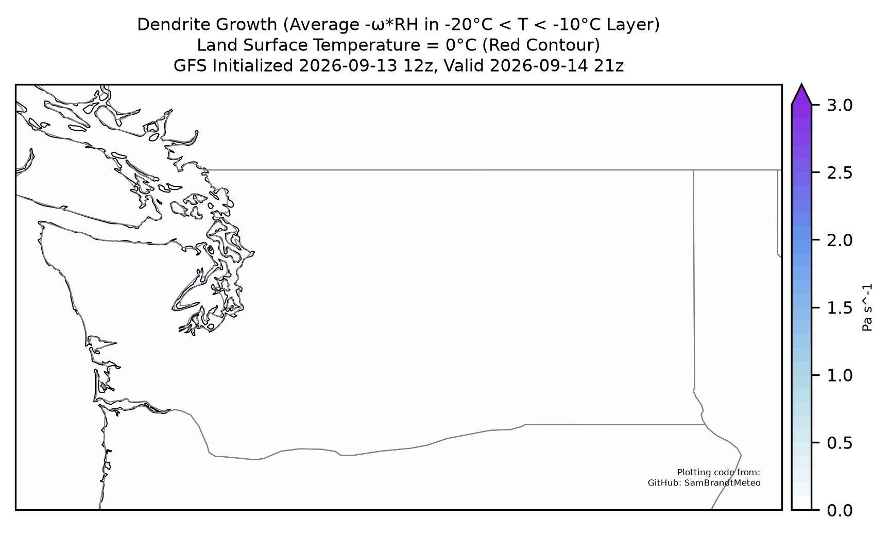

The Dendritic Growth Zone
Loading latest forecast…
If you see this, the site is looking for the most recent forecast.
Read Full Forecast →Areas we cover
Mt. Baker Backcountry Heather Meadows
Base: 3,500' | Summit: 5,089'
Stevens Pass
Central Cascades
Base: 4,061' | Summit: 5,845'
Alpental Backcountry
Summit Central, West, East, Alpental
Base: 3,000' | Summit: 5,420'
Blewett Pass
Elevation: ~4,100'
Crystal Mountain
Base: 4,400' | Summit: 7,012'
Paradise - Mt. Rainier
Muir and Tatoosh Access
Base: 5,400' | Summit: 10,000'
White Pass
South Cascades - US 12 Corridor
Base: 4,500' | Summit: 6,000'
Recent Forecasts
- Loading recent posts…
GOES + Radar Looper
Integrated GOES true color and radar loop for the Pacific Northwest. Updated every 2 hours.
Loading latest satellite loop…
Welcome to the Dendritic Growth Zone!
While also the name of our blog, the Dendritic Growth Zone (DGZ) is key to understanding snow forecasting. What is the dendritic growth zone? Simply put, it's a layer in the atmosphere where our favorite snowflakes grow. When we ski or ride that perfect blower powder, we are enjoying the fruits of the DGZ's labor: millions of these stellar dendrite snowflakes. These classic six-sided snowflakes are what dreams are made of. Their intricate arms and branches leave plenty of room for air in between the snowflakes, providing low-density powder we all know and love. For a more scientific description, the DGZ is defined as the layer of the atmosphere between -10°C and -20°C. When these temperatures combine with other favorable conditions such as high relative humidity and upward motions, the DGZ is highly efficient at growing stellar dendrites through the Bergeron-Findeisen process. The Bergeron-Findeisen process grows ice crystals and snowflakes by depositing supercooled water vapor molecules in the clouds. As water vapor deposits onto ice crystals, the drop in vapor pressure around water droplets causes them to evaporate, providing more water vapor to deposit onto the ice crystals and allowing ice crystals to grow rapidly in size and complexity.
Here are two plots that can help us analyize the DGZ.

What is this?
This figure shows current atmospheric conditions in the Dendritic Growth Zone (DGZ) from the Storm Prediction Center. The green contours/shading represent relative humidity in the DGZ layer of the atmosphere. The purple numbers represent vertical motions in the DGZ (ω, omega), measured in units of pressure decrease per second.
How to use:
To find where dendrites are growing in the atmosphere, look for green hatched areas inside purple contours. More negative ω values show stronger upward motions in the atmosphere (better for dendrite growth). The more moisture (darker green) combined with strong upward motions (more negative purple values), the better conditions for stellar dendrite formation.
Source:
https://www.spc.noaa.gov/exper/mesoanalysis/
What is this?
This is a 24hr forecast for dendrite growth efficiency (ω times relative humidity) shown in blue shading. The red contours show where surface temperatures are below freezing. This plot updates every 6 hours via GitHub Actions at 10Z and 22Z (2am and 2pm Pacific Standard Time).
How to use:
To find where dendrites are growing in the atmosphere, look for dark blue to purple shading inside the red contours. The plot is valid for the UTC time listed in the title. For example, in November Washington is 8 hours behind UTC, so 2025-11-29 06Z is valid at 6am UTC on November 29th / 10pm PST on November 28th.